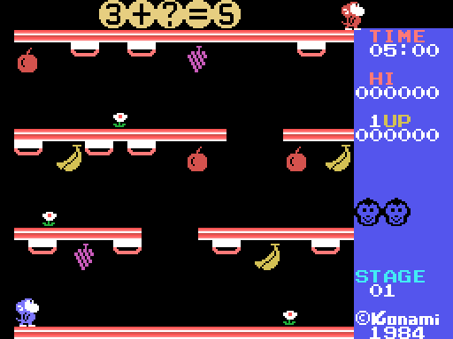

Un mono en una escuela de tres pisos, una cuenta con una cifra tapada, diez tarjetas colgadas de las plataformas y cangrejos que van a por él. Todo lo de esta página sale de leer el código que lo hace y de medirlo en el emulador.

Arriba, la ecuación en cifras grandes de 2×2 tiles (0x7207), con un ? en la cifra que hay que encontrar. Debajo, cuatro plataformas —el suelo, la de arriba y dos entre medias, con huecos— y colgadas de ellas las diez tarjetas de la fase, que se ven solo por el canto (el 2×2 rojo de 0x5082). Ocho frutas cuelgan también, tres flores adornan, y a la derecha el panel: TIME, HI, los puntos, las vidas, STAGE y el ©Konami 1984.
Arriba a la derecha pasea el profesor, que es el mismo sprite del mono en rojo oscuro (0x7ED9). Va de 0xB8 a 0xE8 y vuelve, cada dos fotogramas un pixel.
?, el globo sube y la cifra se revela (0x6D27): pierdes la vida.? y la escribe (0x74D5), vuelve a su sitio y los dos se ponen a bailar con la cara grande (0x6DFC). Tres ecuaciones así y la fase está superada: el tiempo que queda se convierte en puntos, 10 por segundo (0x77ED).Entre medias, los cangrejos.
Izquierda y derecha andan (estado 2, un pixel por paso, sonido 3 cada cuatro). El botón de disparo salta: sin dirección, en vertical (estado 3, la tabla de 24 desplazamientos de 0x6423: sube 3 3 3 2 1 1 1 0 1 0 1 0 y baja 0 1 0 1 0 1 1 1 2 3 3 3, uno cada dos fotogramas); con dirección y a más de 12 pixels del borde, hacia arriba por un hueco (estado 4): trepa cuatro pixels por fotograma moviéndose un pixel al lado, y si encuentra plataforma a menos de 17 pixels por encima que le cubra (0x696B) se sube. Si no, cae. Al salirte de una plataforma por el borde caes (estado 6), cuatro pixels por fotograma.
No hay escaleras: se sube por los huecos y se baja por los bordes.
Tres actores más, con el mismo estado que el mono (0x602E) y su tipo en el nibble bajo de +0x5B: 1, 2 y 3. Los tres empiezan escondidos con temporizadores de 0x20, 0x40 y 0x60 (0x4B24), aparecen arriba en el centro (Y = 0x10, X = 0x60), se descuelgan a través de la plataforma de arriba (estado 7, un pixel cada cuatro fotogramas mientras el tile no esté vacío) y caen al primer suelo.
Cuántas veces por fotograma se mueven lo dice la fase (0x4850): fase/8 + 1, como mucho 4, y uno de cada cuatro fotogramas solo una. Y cuánto esperan escondidos antes de volver, (16 - fase) × 16 + 17 fotogramas hasta la fase 19, uno desde la 20 (0x6585). Al llegar al borde izquierdo del suelo se van por él (0x61C2).
Si uno te toca a menos de 16 pixels (0x69B0), cara de susto (0x65AE), sonido 0xA0 y una vida menos.
Ocho por fase (0x6806): manzanas (0xF8), plátanos (0x78) y uvas (0x7C), colgadas en las filas 3, 10 y 17. Se cogen saltando contra ellas (0x5FA7): 100 puntos, sonido 7, y el mono la lleva en la cabeza (bits 2-3 de 0xE260, juego de sprites 1 con los brazos arriba). Con la fruta en la cabeza el disparo no salta: la tira hacia donde mira (estado 8, 0x64EA), y la fruta vuela por una de las dos parábolas de 0x742F/0x7451, ocho pasos y a caer.
Una fruta que va por el aire mata a lo que toque: al cangrejo, que se muere enseñando un "500" blanco durante 0x20 fotogramas (0x5FF5); o al mono, que pierde la vida (0x5FE8). Los cangrejos del tipo 3 hacen exactamente lo mismo contigo. Al caer sobre una fruta desde arriba la descuelgas (0x6496), y la que se sale de la pantalla desaparece.
Cada vida empieza con 5:00 en el reloj (0x47E1) y pierde un segundo cada 64 fotogramas (0x6CC6); a menos de diez segundos suena el aviso 0x0C cada fotograma, y a cero se pierde la vida. Al volver a jugar, si quedaba menos de 0:30 se pone en 0:30 (0x6CEF). Al superar la fase el reloj se descuenta a puntos, un segundo por cada cuatro fotogramas, y vuelve a 5:00.
Tres vidas (0x47E1). Una más cada 20.000 puntos (0x4974: 0xE052 lleva las decenas de millar de la siguiente), sonido 0x10. Puntos: 100 la fruta cogida, 500 el cangrejo, 500 la respuesta acertada, 500 al entregarla, 10 por segundo sobrante. El récord se guarda en 0xE040 y se pinta al momento.
Al empezar la partida, y otra vez tras cada fase superada, aparece el LEVEL SELECT: teclas 1 a 5 (0x765F), un minuto de espera y sigue con el que hubiera. Cada jugador elige el suyo (0xE153/0xE154). El nivel es el guión de la ecuación (0x7117):
| nivel | guión | forma | ejemplo medido |
|---|---|---|---|
| 1 | 0A 0E | A + B = R | 89+9?=188 |
| 2 | 0B 0E | A − B = R, con signo si sale negativo | 89−9?=−10 |
| 3 | 0D 0E | (D × E) ÷ D = E | 72÷?=9 |
| 4 | 0C 0E | A × b = R, b de una cifra | ?3×3=129 |
| 5 | 0C 10 0A 11 0E | a × ( b + c ) = R, todo de una cifra | 7×(?+4)=56 |
A y B son de dos cifras en BCD, con las unidades entre 2 y 9. La cifra que se tapa se elige restando un número al azar de 0 a 15 al valor de la primera cifra de la ecuación (0x7253), así que nunca cae más allá de esa posición: con un 1 delante el ? va siempre en el primer operando, y en 400 ecuaciones muestreadas solo 67 lo llevan en el resultado.
Al arrancar el KONAMI sube desde la fila 21 (0x6C42), sale VIDEO CARTRIDGE, y el rótulo "Monkey Academy" se pinta fila de pixels a fila de pixels (0x4C77) en los tiles 0xB8-0xFF con tres bandas de color. Debajo, PLAY SELECT: 1 y 2 con joystick, 3 y 4 con teclado, para uno o dos jugadores. Sin tocar nada, a los 256 fotogramas arranca la demo: la ecuación 3 + ? = 5, con la cifra 2 escondida, jugada por el guión de 120 bytes de 0x4B78, un mando cada ocho fotogramas.
Con dos jugadores se alternan al perder la vida (estado 14 intercambia 0xE050-0xE06F con 0xE080-0xE09F), cada uno con su joystick (0x4905 elige el puerto) y con sus propias tarjetas y su propia ecuación.